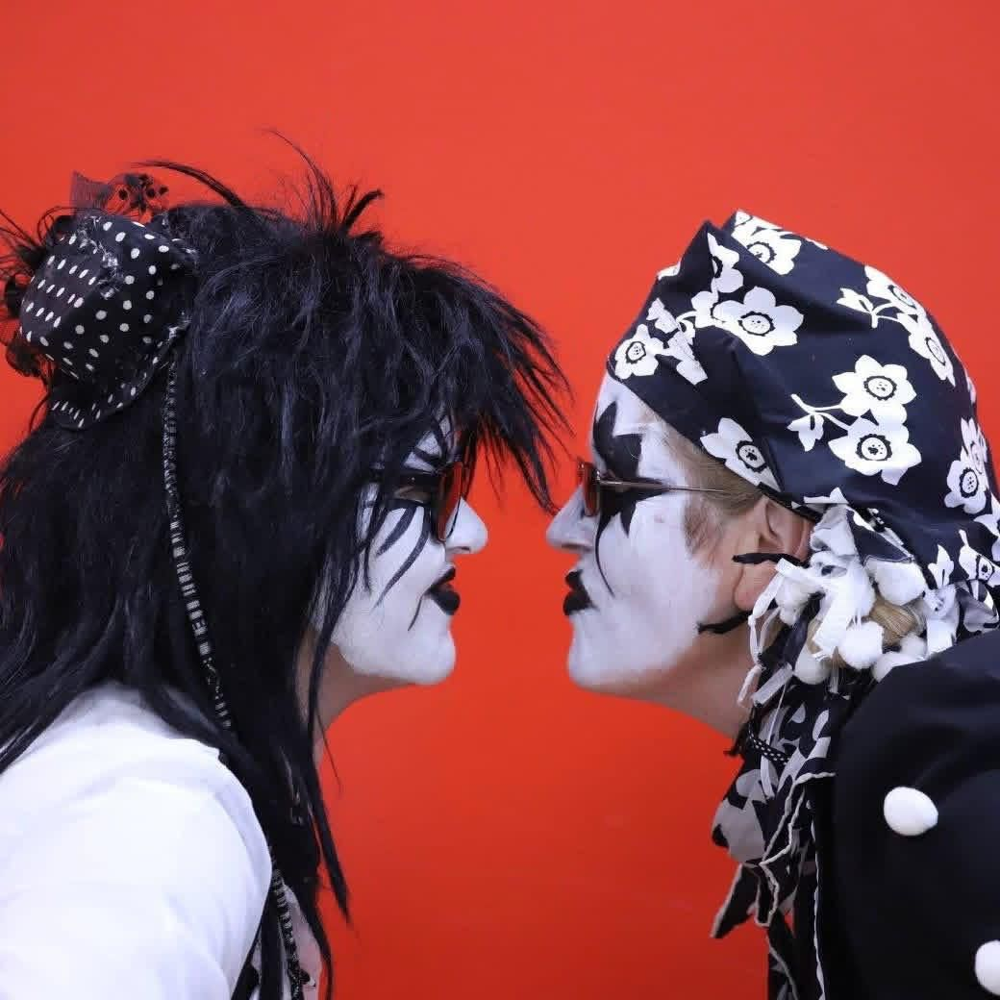

Tributes to Glen Dawkins

On 20 March 2026, Glen Dawkins died after a long and agonising illness. She was the energetic, positive force who made so many things happen in the team since she and Holly joined more than 20 years ago, having loved us so much that they moved up from London to join the team. She was with us at Sidmouth last year: though too ill to dance, she played her unique washtub bass. She leaves a huge gap in the team.
From Holly
Glenys and I first saw Pig Dyke at Towersey Folk festival in 2003 and were hooked. We were the team's biggest fans until 2007, when we moved from London to the Fens and joined Pig Dyke as dancers. Glen danced for 16 years, going to every gig and festival. In 2023, she was diagnosed with stage 4b ovarian cancer. After treatment stabilised her illness, she joined the band with her tub bass, occasionally dancing.
In 2025, she went into relapse, but continued to dance and play for as long as possible. Sadly, she died on Friday, 20th March 2026.
From Steve
It may seem unusual for Glen’s husband, now widower, to write a tribute here. But Glen was unusual, and our association with Pig Dyke was unusual, so here goes.
As Tony says, we first became aware of PD at Towersey Folk Festival in August 2003, when Holly was 7. Holly introduced us, because her friend was camping close to the “pigpen” and had seen them putting on costume and make-up. So Glen and I took the two of them to a large tent, where I think they were putting on an interval, short performance. We were all blown away by the energy of the dance and the music, which was a million times removed from the sort of, frankly, boring stuff I had seen.
The point is, it would all have ended then and there but for Glen. I am naturally a shy person, I prefer to stay in the background. For example, in my career in Further Education I aspired to be a Vice Principal of a college and I achieved it at a relatively young age. I never applied to be a Principal. I would never have approached the team, but Glen did. Friendships formed quite easily and quickly right there, because although looking like a bunch of crazy Goths, they were actually quite nice people!
As proved when we went to see them on the South Bank that November, around the time of Holly’s 8th birthday, where they overwhelmed Holly with their effusive welcome and their thoughtful, personalised gifts.
It changed our lives. We moved up here and Glen was able to dance with PD and so did Holly. Glen was not a shy person, but Holly was, and dancing as someone else (in her mind) did wonders for her confidence. Glen took to it heart and soul, like anything she took on, and she danced with PD for the next 18 years. Her last outing was at Sidmouth in August last year. She was not able to dance, but played her tub base. She told me afterwards that she had had trouble walking in a straight line there, and that it was not due to Pimms.
The day after her return from Sidmouth she spent the next 10 days in Peterborough City Hospital and it was, with hindsight, the beginning of the end. A few days after that she had radiotherapy for what was now a growth on her brain, the cause of her balance difficulties at Sidmouth.
So this is now an obituary, not a tribute, but I just wanted to say how important Pig Dyke Molly was in Glen’s life and, by extension, Holly’s and mine. None of it would have happened but for Glen. Thank you for welcoming us and letting it happen.
From Kai
I have absolutely no idea where to start… I recently worked out that my first festival away with Pig Dyke was Towersey in 2003, which incidentally was where Glen & Holly first found the team. I have no memory of it whatsoever, being only 3 at the time, so I can’t comment more than that - just found it interesting.
When I later joined the team, Glen took me under her wing and adopted the mum role for me whenever I was away with Pig Dyke. She always seemed to be having the most fun. I was very conscious of the fact that wherever Glen was headed was where I wanted to be; you could always guarantee she’d be providing the laughs. Her unwavering positivity right to the end was nothing short of inspirational - I commended her on it a number of times, along with countless others, I’m sure.
One of my favourite memories with Glen has to be the Pimms Royale fiasco at Sidmouth… The team had an uncomfortably long gap before the last dance spot of the day. Some sensible members of the team went back to the campsite to de-gear, whereas some decided to wait it out at one of the pubs. This particular pub was selling ginormous pitchers of Pimm's mixed with wine for dirt cheap. So Pig Dyke, of course, capitalised on that …again and again. By the time to dance had arrived, there wasn’t many who could walk in a straight line, let alone successfully perform the zig-zag. It resulted in a rather stern telling off - the less said the better. But it never fails to make me smile. I can’t remember what festival we were at, but Glen made us a brew one morning and mentioned that Steve had kept her awake by moaning and wriggling about a lot in his sleep. She relayed how she’d been kicking his shins in an attempt to quieten him, but to no avail. A while later, Steve rose from the van and explained he’d been in agony for hours with pain all over his legs. He then proceeded to present a squashed wasp that he’d found in his pyjamas. The hysteria coming from us afterwards was something I’ll never forget. I owe a lot to Glen, Holly and Steve.
We did lots of days out, festivals, getting vans stuck in the mud, flooding tents, ginger gin, ukuleles, lantern traybake, talking about music (specifically Rob’s - a lot), singing, and bad jokes. I always looked forward to going back to the campsite after a busy day and sitting under the pig pen (gazebo) to debrief and exchange stories until the early hours. It was always such a wholesome atmosphere.
You provided a lot of laughs and memories I’ll forever hold close. Wherever you are, keep frolicking! Thanks Glen.
From Helen
Much has already been said about Glen, with which I would wholeheartedly agree, especially about her courage and energy, so I am trying to say here what else was particularly true in my experience.
Glen was one of the wittiest people I have ever known, and I shall really miss being able to make jokes with her and share that creative laughter. Her creativity was also manifested in her musical, dramatic and comedic ventures, from singing and stand-up to playing the Wagnerian horn and the bass at carol-singing or for dancing.
Glen was also generous and capable of great friendship and kindness. She was sensitive in a way that might not be readily apparent, as although she was ready to say things as she saw them, she felt things very deeply. Also highly cultured, she would easily share ideas about art, books, music, and science (to name those that spring to mind), and enjoyed a trip to the Globe as much as looking after chickens, ducks, pygmy goats, ponies and the usual pets.
She will be vastly missed, but I trust she rests in peace.
From Tony
The team first met Glen, Steve and Holly at Towersey Festival 2003. Holly was 7, and she saw something in what we did that she adored. The family followed us to other festivals - most memorably to Queen Elizabeth Hall (OK, the foyer) when we were booked there on a Saturday close to Holly's eighth birthday: Glen and Steve brought her, her friends - all in black and white - and a black-and-white birthday cake.
For a year or two the family were our fan club - Glen set up a Facebook page with this title! So when they decided to move out of West London, somewhere close to Pig Dyke made sense...and we had two new and very enthusiastic members.
Glen rapidly made herself the beating, energetic heart of Pig Dyke. Socially, she was the person who made things happen wherever we were: at camping weekends, everyone gathered round Glen's tent or van, and the parties started there. I remember the morning she came out of her van, surveyed the squalor of last night's party and announced, "Oh No! The washing up fairy hasn't been!" She rapidly learned all the dances in the repertoire, and did them well - she wouldn't allow herself to do anything different! She was the first to sign up for every event and encouraged others. She brought enormous energy and positivity to the team. Things were never boring around Glen. She threw herself into the social life of the team: St Andrews Straw Bear night 2026 wasn't the same with no Glen: she always asked for several spots - ukes, Appalachian, singing, tricks and general silliness. She called dances and several years she organised and starred in the play done that night.
Glen's positivity, irrepressible energy and strong views made her sometimes not the easiest person for The Boss to work with - Glen had ideas, opinions, and a boldness to express them forcefully. I had many, many rows with Glen - they all ended with us committing to work together better in future. The team was too important to her for her to walk away, and she was too important to the team for me to see her do that.
That commitment burned just as hard during her illness. She was with the team at Sidmouth 2025 - sadly not well enough to dance but playing her unique home-made bass, which added skilfully to our music. (Among her other instruments were the ukulele and the unforgettable Wagnerian Horn...carol-singing was enhanced by a sound Stanground had not heard before - nor had we!)
The team is immensely poorer for the loss of Glen. Buzzing, creative, full of energy, committed, funny,...thank you, Glen.
From Amy
Here are my memories of Glen:
I remember first joining Pig Dyke, with Molly and Glen patiently teaching me stepping in the bar area of Burley Square Club.
I will never forget finding out how old she was and being completely shocked. Her energy and zest for life made her seem so much younger.
Then there was Pimsgate. Glen running round the field several times in an attempt to sober up. The black and white jogger will always stick in my mind. And persuading Kathryn to shave half her head and then actually doing it in the campsite. Not my least stressful memory, especially as I was in charge of Kathryn, but definitely a memorable one.
I also think of our marking parties between dances and practice, each of us with a pile of test papers. Glen worked hard and played hard in equal measure. Above all, I will remember her determination, her fight, and her smile right to the very end.
I will miss you, Glen.
From Julian
Pig Dyke and Glen were made for each other: she brought talent, daring, generosity, humour, vitality, conviction and whimsy. I did not know Glen for long, but these are the memories that sum her up for me:
During her last months, I mentioned to Glen that I was considering learning to play the recorder, though I had no musical talent whatsoever. Glen immediately offered the belief that I could achieve the impossible, an instrument to practice on, music and lessons.
We were dancing in Ely, and there was doubt in the team as to whether we should attempt the Pole Dance, which we had only just learnt. When I suggested we should risk it, Glen, temporarily in charge, fearlessly said, “Yes!”.
Glen's company was always a pleasure, whether you were arguing or laughing.
As her illness progressed, you could see that dancing was becoming a struggle, but dance she did.
Glen squeezed everything from life and made the pips squeak. I shall miss her and will always be grateful for what she did for Pig Dyke.